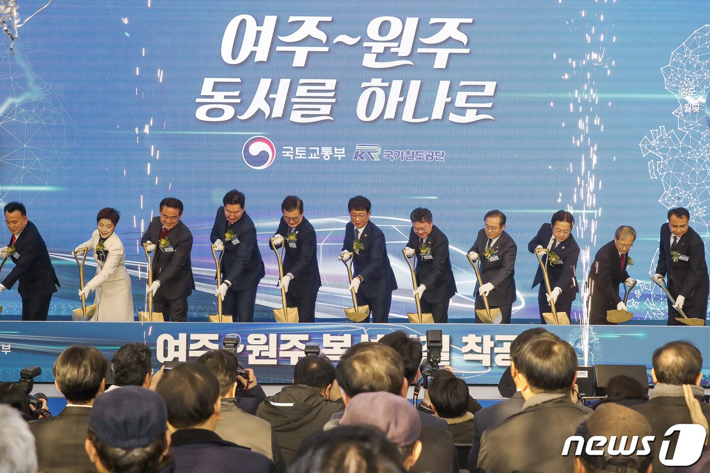
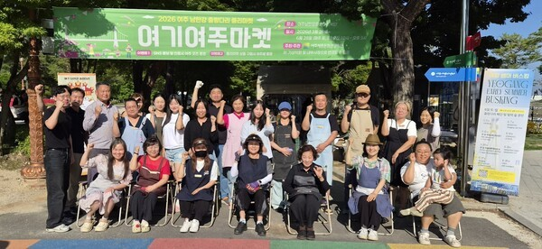
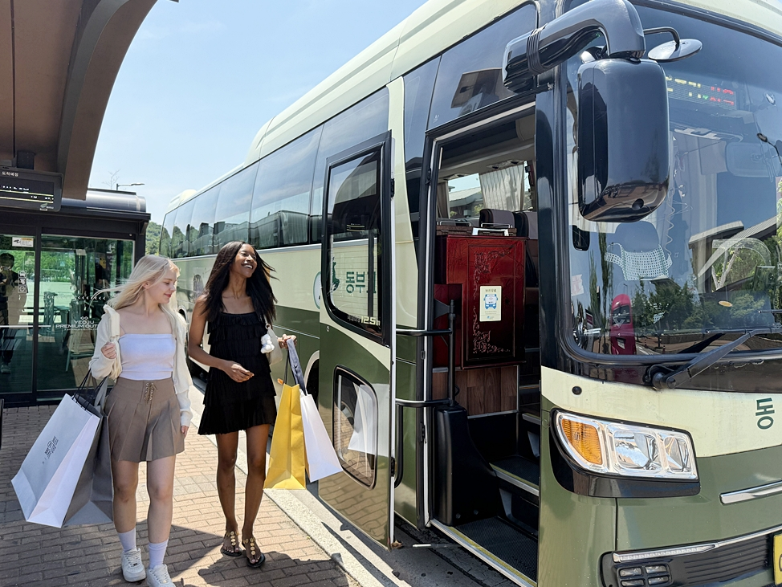
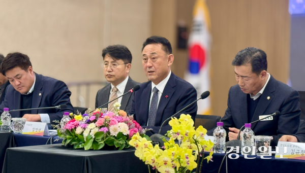

언론보도자료
Promotion Center
언론보도자료
이안 리버파크 여주의 언론보도자료와 현장 소식을 한곳에서 확인하세요.
글로벌코리아신문
여주 리버파크, 2단지 특별공급 진행…토지 100% 확보
전용 59·79㎡ 중심 총 487세대, 남한강 인접 10년 장기 민간임대로 공급.
경상일보 여주 리버파크, 2단지 특별공급 진행…남한강 조망·생활형 커뮤니티 결합1단지 완판 후 2단지 특별공급 진행, 남한강 조망과 생활형 커뮤니티가 강점.
에너지경제신문 ‘여주 리버파크’ 2단지 특별공급 진행남한강·출렁다리 인접 487세대, 선착순 20세대 대상 특별공급 중.
딜라이트닷넷 남한강 조망 여주 리버파크, 2단지 특별공급 진행여주 오학동 남한강 조망 단지, 월판선 연장·수광선 등 광역교통 개선 기대.
여주 입지 수혜 소식

뉴스1
여주시, 경강선 강천역 신설 총력…"도시·산단 개발로 경제성 높인다"
여주시가 지역균형발전을 위해 경강선 강천역 신설을 추진하며, 도시·산업단지 개발과 연계해 노선 경제성을 끌어올린다는 구상.
· (여주=뉴스1) 양희문 기자 = 경기 여주시가 경강선 여주~원주 복선철도 구간 강천역 신설 등 민선 9기 핵심 공약을 본격 추진한다.
7일 시에 따르면 경강선 여주~원주 복선철도 공사는 2024년 1월 착공했다.
여주역에서 서원주역까지 22㎞ 구간을 연결하는 사업으로, 2027년 말 개통 예정이다.
개통 시 서원주~여주는 9분, 서원주~강남은 40분, 서원주~인천은 87분이 소요된다.
시는 여주~서원주 구간에 강천역 신설을 요구하고 있다.
수도권 주요 관광지인 강천섬의 접근성을 높여 지역 균형발전을 꾀하겠다는 것이다.
자체적으로 실시한 타당성 용역에서도 비용대비편익(B/C)이 1.03으로 경제성이 충분하다는 입장이다. B/C가 1을 넘으면 경제성이 있다는 의미다.
이충우 시장도 강천역 신설을 민선 9기 핵심 공약으로 내걸었다.
그는 "시는 수도권정비계획법 등 각종 규제로 인해 성장·발전에 제한을 받고 있다"며 "지역 균형발전 및 교통 취약 해소를 위해 강천면에 역이 신설돼야 한다"고 말했다.
문제는 국가철도공단이 강천역 신설을 부정적으로 보고 있다는 점이다.
공단은 지난해 7월 1일 강천역 신설의 타당성 용역 결과 B/C가 0.31이라고 시에 통보했다.
철도사업의 경우 B/C가 0.8 이상이면 경제성이 있다고 판단한다.
강천역 신설은 경제성이 낮아 현재로선 사업 추진이 어렵다는 게 공단 측 입장이다.
이에 시는 강천면의 경쟁력을 높여 강천역 유치를 이끌어낸다는 방침이다.
도시개발사업과 일반산업단지 개발을 추진해 유동인구를 늘려 경제성을 끌어올린다는 계획이다.
시 관계자는 "각종 규제로 차별받은 지역 주민들을 위해서라도 강천역 신설은 필요하다"며 "시 차원에서도 강천역의 경제성을 높이기 위해 다양한 방안을 강구하고 있다"고 밝혔다.
yhm95@news1.kr

경인매일
"관광객 발길이 지역 상권 살렸다"…여주시 출렁다리, '경제 플랫폼'으로 진화
남한강 출렁다리 플리마켓이 3개월간 1억 4,300만원 매출(전년 대비 69.2% 증가)을 기록하며 관광 인프라가 지역 상권을 견인.
관광객을 모으는 데 그쳤던 관광지가 이제는 지역경제를 움직이는 플랫폼으로 진화하고 있다. 여주 남한강 출렁다리가 플리마켓과 문화 콘텐츠를 결합한 운영을
통해 관광과 소비를 연결하는 새로운 모델을 제시했다.
여주세종문화관광재단은 올해 상반기 여주 남한강 출렁다리 북단에서 운영한 지역 밀착형 플리마켓 '여기여주마켓'이 13주간의 일정을 마무리했다고 밝혔다.
지난 3월 28일부터 6월 28일까지 매주 토·일요일 열린 마켓에는 여주지역 소상공인과 농가 27개 팀이 참여해 누적 매출 1억4천300만원을 기록했다. 이는 지난해 같은 기간 8천454만원보다
69.2% 증가한 실적이다.
이번 성과는 단순한 판매 실적 이상의 의미를 갖는다. 관광객의 발길이 지역 상권으로 이어졌다는 점에서다. 그동안 관광객이 지역 명소를 둘러본 뒤 소비 없이 떠나는 '스쳐 가는 관광'이 지역
관광의 한계로 지적돼 왔다.
그러나 출렁다리와 플리마켓, 버스킹, 푸드트럭을 결합한 콘텐츠는 관광객의 체류시간을 늘리고 실제 소비를 유도하는 효과를 냈다.
참여 셀러 전원이 여주지역 소상공인과 농가로 구성된 점도 눈길을 끈다. 지역 농가는 고구마와 땅콩 등 여주 대표 농산물을 직거래 방식으로 판매하며 관광객에게 지역 농산물의 경쟁력을 알렸고,
소상공인은 관광객과 직접 소통하며 브랜드 인지도를 높였다.
관광이 지역경제의 선순환 구조를 만드는 연결고리 역할을 한 셈이다.
관광산업의 경쟁력이 단순히 볼거리 확보에 머물지 않고 체류와 소비를 얼마나 이끌어내느냐로 옮겨가는 상황에서 이번 사례는 지방 관광정책에도 시사점을 던진다. 관광객 유치보다 중요한 것은 관광객이
지역에 머물며 소비하는 구조를 만드는 일이라는 점을 보여줬기 때문이다.
재단은 상반기 운영 성과를 바탕으로 하반기에도 '여기여주마켓'을 이어갈 계획이다. 계절별 특화 콘텐츠를 확대하고 참여 셀러를 다양화하는 한편 방문객이 직접 참여할 수 있는 프로그램을 늘려 체류형
관광 콘텐츠를 더욱 강화할 방침이다.
이순열 여주세종문화관광재단 이사장은 "여기여주마켓은 관광과 지역경제를 연결하는 중요한 역할을 하고 있다"며 "앞으로도 남한강 출렁다리를 중심으로 여주만의 경쟁력 있는 문화관광 콘텐츠를 지속적으로
발굴해 지역경제 활성화에 기여하겠다"고 말했다.
이번 '여기여주마켓'의 성과는 관광 인프라가 지역경제를 견인하는 자산이 될 수 있음을 보여준다. 관광객 수를 늘리는 정책에서 한 걸음 더 나아가 지역 상권과 문화, 농업을 함께 성장시키는 지속
가능한 관광 모델을 구축할 수 있을지 관심이 쏠린다.
출처 : 경인매일(https://www.kmaeil.com)

이투데이
외국인 쇼핑객 잡아라…신세계사이먼, 여주아울렛 교통 인프라 확대
여주 프리미엄 아울렛 고속버스 노선 증편과 외국인 전용 버스투어 확대(주 5회)로 접근성 강화, 상권 활성화 기대.
신세계사이먼이 급증하는 외국인 관광객 수요에 대응하기 위해 여주 프리미엄 아울렛의 접근성 강화에 나섰다. 직통 고속버스 증편과 외국인 전용 버스투어 확대를
통해 개별관광객(FIT) 유치에 속도를 내는 모습이다.
19일 유통업계에 따르면 신세계사이먼은 동부고속이 운영하는 서울고속버스터미널~여주 프리미엄 아울렛 직통 고속버스 노선을 17일부터 평일 왕복 1회 증편했다.
이에 따라 해당 노선 운행 횟수는 평일 왕복 8회, 주말 및 공휴일 왕복 10회로 늘어났다. 이번 증편으로 서울고속버스터미널에서는 오후 7시, 여주 프리미엄 아울렛에서는 오후 9시에 출발하는
노선이 추가돼 방문객들이 보다 여유롭게 쇼핑 일정을 소화할 수 있게 됐다.
서울 강남권과 여주 프리미엄 아울렛을 연결하는 이 노선은 2023년 7월 개통 이후 꾸준한 이용객 증가세를 보이고 있다. 지난달까지 누적 이용객은 약 25만명에 달했으며, 특히 외국인 이용객
수는 지난해보다 두 배 이상 늘어난 것으로 나타났다.
신세계사이먼은 외국인 관광객을 겨냥한 교통 서비스도 확대한다. 외국인 전용 상품인 '원데이 버스투어' 운영 횟수를 오는 7월 1일부터 기존 주 3회에서 주 5회로 늘린다.
해당 상품은 명동과 홍대 등 서울 주요 관광지에서 출발해 여주 프리미엄 아울렛까지 이동한 뒤 약 6시간 동안 쇼핑과 식사, 휴식을 즐기고 다시 출발지로 돌아오는 일정으로 구성됐다.
지난해 4월 처음 선보인 이후 글로벌 온라인 여행사를 통해 판매되며 다양한 국적의 관광객들로부터 호응을 얻고 있다. 신세계사이먼은 올해 초 주 2회에서 주 3회로 운행 횟수를 늘린 데 이어
이용객 증가에 맞춰 추가 증편을 결정했다. 향후에는 주 7회, 매일 운영 체제로 확대할 계획이다.
신세계사이먼은 교통 인프라 확충과 함께 외국인 쇼핑객 편의성 개선에도 힘을 쏟고 있다. 위챗페이와 알리페이, 라인페이 등 해외 간편결제 서비스를 도입했으며 외국인 전용 할인 혜택과 원스톱
택스리펀드 키오스크도 운영 중이다.

경인일보
가남·신해산단 속도… 여주, 남부권 산업벨트로
가남·신해 일반산업단지 조성 본격화, SK용인반도체클러스터 상생협약으로 반도체·첨단기업 20개 이상 유치 추진.
여주시가 가남·신해 일반산업단지 조성에 속도를 내고 있다.
시는 가남읍 신해리 일원에 조성하는 ‘가남·신해 일반산업단지’ 사업과 관련해 보상 협의와 인·허가 절차가 마무리되는 오는 3월 중에는 공사 발주에 들어간다는 세부계획을 최근 밝혔다.
통상 1~2개월 걸리는 조달청 심사를 고려하면 4~5월 중에는 착공이 가능하다.
산단 조성이 가시화될수록 지역 주민들의 관심도 높아지고 있다.
지난달 ‘가남읍 새해 시민과의 대화’에서 이충우 시장이 가장 많이 받은 질문도 산단과 관련된 것으로 보상부터 추진 일정, 입주 예상 기업까지 다양했다. 이 자리에서 이 시장은
“SK용인반도체클러스터와의 상생협약으로 20개 기업 이상 유치를 추진 중”이라며 “공사 완공에 맞춰 기업을 유치해 산업단지가 곧바로 지역경제 활성화로 이어지도록 만들겠다”는 포부를 밝혔다.
공영개발 방식으로 진행되는 가남·신해 일반산단 5개 구역은 약 6만㎡ 규모로 조성되며, 시는 반도체 관련 기업을 중심으로 첨단 제조·지식기반산업을 유치해 여주 남부권 산업벨트의 핵심 거점으로
키운다는 구상이다.
가남·신해 일반산업단지 조감도 / 여주시 제공 가남·신해 일반산업단지 조감도 / 여주시 제공
시는 2023년 5월, 가남·신해 일반산단 개발계획 및 실시설계에 착수한 뒤 2024년 주민설명회를 통해 교통혼잡과 환경 부담, 보상단가 등 주민의견을 수렴해 산업단지 배치와 교통·환경대책을
보완했으며, 지난해 6월 수도권정비실무위원회 심의와 11월 경기도 지방산업단지계획심의위원회 심의를 거쳐 지난 12월 최종 승인을 받았다.
이 시장은 “비록 규제로 인해 규모는 작지만 5개의 산업단지를 동시에, 그리고 2년도 채 안 되는 기간에 까다로운 행정절차를 모두 끝내고 중앙정부의 승인을 받은 적은 없다”면서 “빠른 시간에
기업을 유치할 수 있도록 만반의 준비를 하고 있다”고 밝혔다.
시는 SK 협력업체인 반도체 장비·소재 기업과 미래차·전기전자 등 고부가가치 업종을 우선 유치하겠다는 분양 전략을 세우고 있다.
손실보상 협의를 마치는 올 3월 중에 시공업체를 정하면 10월에는 선분양에 나설 수 있을 것으로 내다보고 있다. 산단은 오는 2027년 12월 준공을 목표로 하고 있다.
이 시장은 “산업단지 조성을 통한 기업유치는 양질의 일자리를 만들어 젊은 층의 유입과 지역기반 산업 경쟁력 강화, 주민소득 증대로 이어진다”며 “산단조성이 새로운 여주의 성장동력이 될 것”임을
자신했다.
여주/양동민기자 coa007@kyeongin.com